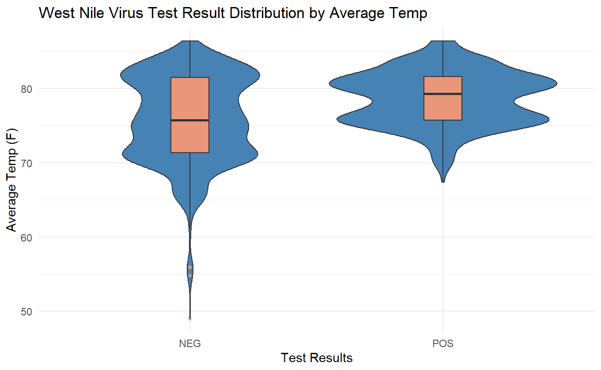
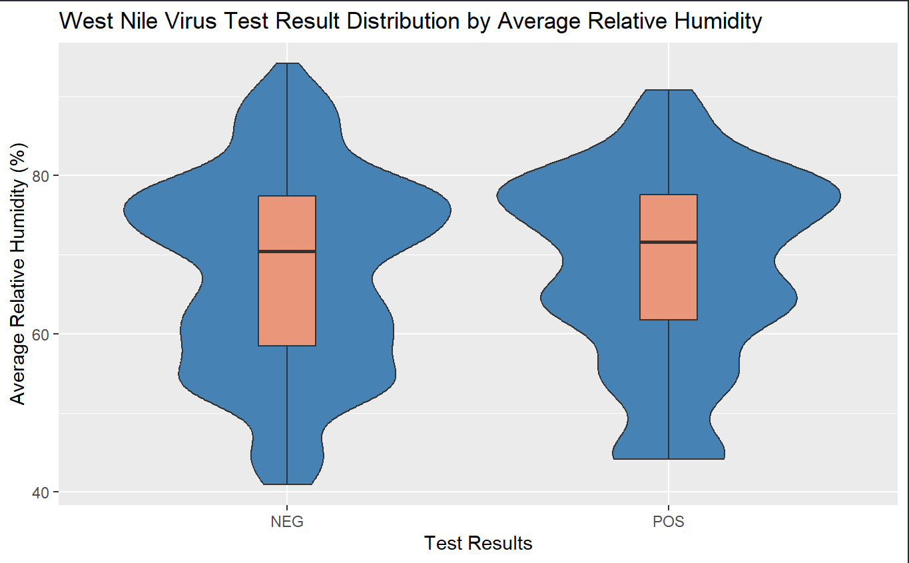
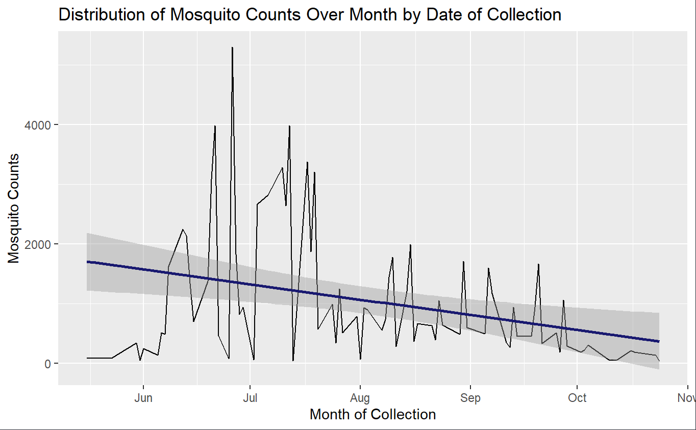
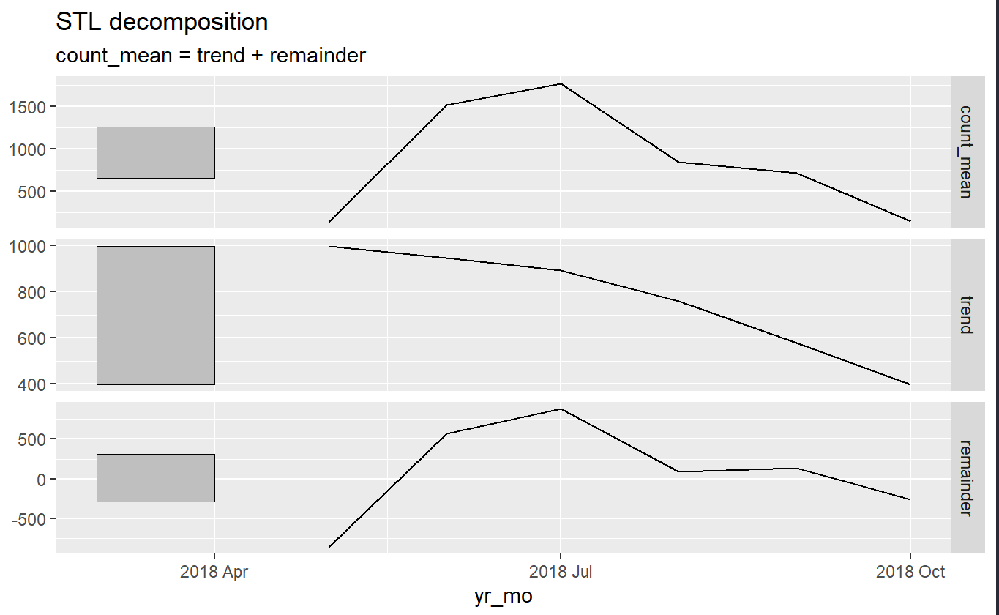
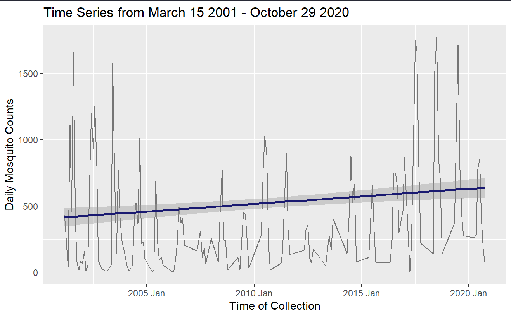

West Nile Virus Blog Post
West Nile Virus Incidence in Pennsylvania Mosquitoes
Introduction:
In 2018, Pennsylvania experienced one of it’s worst West Nile Virus (WNV) outbreaks in 15 years, resulting in around 72 cases reported in humans and three deaths from the virus 1. According to the Pennsylvania Department of Environmental Protection (DEP), West Nile Virus first entered the state in 2000 and since then, multiple state departments(Department of Environmental Protection, Department of Agriculture, and Department of Health) have embarked on a joint effort to manage the mosquito population to help reduce the risk of the virus and educate the public on how to reduce their risk of infection thought Integrated Pest Management 2.
What is West Nile Virus?:
West Nile Virus is a vector born disease that cycles itself through birds (hosts) and mosquitoes (vectors), where a bird infected by WNV from a mosquito can in turn infect an uninfected mosquito who then bites that infected bird2. From there, WNV transmits itself to humans and other mammals. In Pennsylvania, the primary concern for WNV transmission in non-human animals are horses and wild game, particularly birds.
Area of Interest:
Philadelphia has ranked among the top cities for both mosquito rates and WNV cases in humans[1](https://www.publicopiniononline.com/story/news/2018/10/09/pennsylvanias-worst-outbreak-west-nile-virus-15-years/1580572002/)[3](https://www.inquirer.com/science/climate/mosquitos-climate-change-climate-central-global-warming-philadelphia-allentown-atlantic-city-zika-20200804.html3). Mosquitoes season ranges from around March to late October when temperatures are warmer, typically seeing spikes in July. But due to climate change, mosquito season is lasting longer, increasing the potential for exposure to WNV 3. While an increase in mosquitoes does not inherently mean an increase in disease cases, investigating the link could be worthwhile.
Data:
The data for this study was collected from:
[The Pennsylvania Department of Environmental Protection](https://files.dep.state.pa.us/Water/WNV/MosquitoTestingData/)
and the [Pennsylvania State Climatologist](https://climate.met.psu.edu/data/)
Research Question:
What is the impact of temperature and relative humidity on West Nile Virus test results in Philadelphia mosquitoes?
Analysis
To begin the exploration into my analysis, I first conducted basic data manipulation including cleaning the names of the data though janitor, using subset() to to find data only within Philadelphia, and using merge() to combine the Philadelphia subset and the weather data. Additionally, to conduct my t-test, the test result values “POS” and “NEG” were converted to factors from character values using as.factor(). For the time series analysis, the “count” column, containing the counts of mosquitoes was aggregated by the date of collection column renamed to “date”. aggregate() was used to find the sum of mosquito counts per day, since there were multiple collections documented on the same day over the testing period. For spatial interpolation and kriging, the entire 2018 data set was used, and since there were multiple collections taken at the same location arrange() and distinct() were used to organize the rows and keep rows with only unique values for “longitude” and “latitude.”
Exploratory Plotting
The following plots were used to discover potential trends in the data before conducting further analysis. First, I created two violin box plots (Fig. 1 and Fig. 2) to understand the visual distribution of both temperature and relative humidity on mosquito test results. The exploration for temperature shows a potential connection between test results, however the exploration for relative humidity shows there is potentially little relation.


Hypothesis Testing
Since my primary research question is to explore if there is any relationship between temperature and relative humidity and the test results of mosquitoes, conducting a hypothesis test was my first method of analysis. Where:
Null Hypothesis: There is no difference in WNV test results based on temperature/relative humidity
Alternative Hypothesis: There is a difference in WNV test results based on temperature/relative humidity.
A hypothesis test was conducted on both temperature and relative humidity. The results of the summary are as follows


Based on the results of the t-test, the p-value when testing average temperature was far bellow 0.05, meaning that there is a statistically significant relationship between temperature and mosquito test results and that we cam reject the null hypothesis. However, for relative humidity, the high p-value of 0.46 means that there is not a statistically significant relationship between relative humidity and test result. From the calculated confidence interval, it shows that I am 95% confident that the impact of temperature on test results falls within the range of (-3.4, -2.4).
Linear Regression Summary
Following this, i conducted a linear regression on both tests to further unpack the atmospheric influence on mosquito test results.


From the table shown above, it can be concluded that for every 1 degree increase in temperature, the positive test results will increase by 2. It also shows that at 0, the average temperature is approx. 75 degrees. It can also be concluded that for every 1% increase in relative humidity, positive test results will increase by 0.5. And that at 0, the average relative humidity is approx. 67%. The R-squared value for temperature is .066, meaning that 6% of the positive test results could be explained by average temperature. For relative humidity, the R-squared value is -0.0003, meaning that none of the test results could be explained by average relative humidity.
Time Series Analysis
Since research showed that mosquito populations within Philadelphia have been increasing over the years due to higher average temperatures with each year, I wanted to explore this relationship in addition to the analysis conducted above. I conducted a time series analysis on both Philadelphia mosquito counts in 2018 and Philadelphia mosquito counts from the entire range of the data set, 2001-2020. I initually wanted to explore the relationship between time and mosquito test results, however I had difficulty in doing so due to the test result data being binary. The following figures show my results.

I first plotted a basic analysis and regression of mosquito counts over the months of May - October per day of collection. The output (Fig 3.) showed that there is a downward trend in mosquito counts by month, which is expected since mosquitoes tend to me most active during warmer months. There is also evidence of a spike in mosquito counts near the end of June.
Following this, I converted the data into a time series object and conducted a decomposition, breaking the analysis down into “trend” and “noise.” Since the data was only collected over a year, there was no seasonality found. The results of the decomposition are as follows.

The bars on the left side of the graph (Fig. 4) help to compare the magnitude of the cycles. The bar for trend is quite large, indicating that it likely not important in driving the mosquito counts.
(Fig. 5) was produced as a result of the decomposition, plotting the adjusted data

The results of this analysis show a spike in mosquito counts in July followed by a sharp decreased in counts throughout the rest of the collection period. Since this analysis only looked at one year of data, I decided to look at the entire mosquito collection cycle (2021 - 2020) within Philadelphia

This plot (Fig.6) shows that there is a positive trend in mosquito counts throughout the years of collection, possibly due to increases in temperature making Philadelphia a much more habitable place for mosquitoes for a longer period of time. To follow up on these results and to find if there was a significant seasonal trend in the data, I attempted a decomposition. However, due to the significant amount of gaps in time from the months of collection starting and ending at different times per year and there being several days throughout the periods where there was no collection (resulting in the error “internal NA’s”), I was unable to do a deeper exploration of the time series.
Future Analysis and Conclusions
Based on the tests conducted, it is reasonable to believe that there is a connection between average temperature and positive mosquito test results, however, that may not be the only factor in influencing the relationship. I believe that further analysis is needed to definitively determine if atmospheric factors like temperature impact the amount of mosquitoes that test positive for West Nile Virus. Including other variables like the cases of WNV in birds, collection locations (vacant lots, parks, neighborhoods, etc) and other weather events such as flooding would help to determine a more concrete relationship in what determines both the count of mosquitoes and the occurrence of WNV in populations.
Additionally, having a more detailed data set that details whether or not the test results were for the entire population of mosquitoes tested in that location, for that day, or for an individual mosquito in that population would be beneficial.
References
Hook, J. (2018, October 9). Pennsylvania is having its worst outbreak of West Nile virus in 15 years. Public Opinion. https://www.publicopiniononline.com/story/news/2018/10/09/pennsylvanias-worst-outbreak-west-nile-virus-15-years/1580572002/
Kummer, F. (2020, August 4). Mosquitoes arrive earlier, stay later in Philly region because of climate change, data suggest. https://www.inquirer.com. https://www.inquirer.com/science/climate/mosquitos-climate-change-climate-central-global-warming-philadelphia-allentown-atlantic-city-zika-20200804.html
Mosquitoes. Department of Environmental Protection. (n.d.). https://www.dep.pa.gov/Business/ProgramIntegration/Vector-Management/Mosquitoes/Pages/default.aspx
ssadowski@pennlive.com, S. S. |. (2018, August 7). West Nile hot spots in Pa.: What's The risk in your county? pennlive. https://www.pennlive.com/news/erry-2018/08/94f441765f7887/west-nile-hot-spots-in-pa-what.html